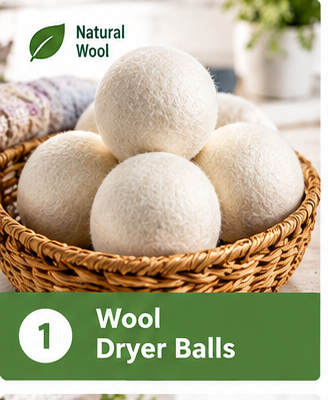

Explore concentrated detergents, reusable laundry tools, and garment-care accessories. Choose products suited to your washer and fabrics, dose as directed, and keep supplies you already own when they do the job.
Check detergent dosing, washer compatibility, and materials on the exact listing.
Follow garment care labels and product instructions before applying stain treatments or laundry additives.
Consider whether an item you already own can do the same job.
These are selected product ideas, not hands-on reviews. Pictures are illustrative; check Amazon for exact specifications, ingredients, current availability, and care instructions.
As an Amazon Associate I earn from qualifying purchases. We may earn a commission when you buy through the links below.
AMAZON OPTION

Illustrative category image; exact product shown on Amazon.
Smart Sheep Wool Dryer Balls, 6-Pack
Six reusable dryer balls listed as 100% New Zealand wool. Use as an alternative to disposable dryer sheets when appropriate for your routine. Follow garment and dryer instructions; drying time and static results vary by load. Also featured in our Eco Cleaning category.
Illustrative category image; exact product shown on Amazon.
Tru Earth Unscented Laundry Detergent Sheets, 32 Strips
A compact unscented detergent format supplied as 32 strips, without a liquid-detergent jug. Follow the current label for dosing by load size and soil level. Check ingredients and washer compatibility; avoiding a plastic jug does not establish that the detergent itself is plastic-free.
Illustrative category image; exact product shown on Amazon.
Seventh Generation EasyDose Free & Clear Detergent, 23.1 fl oz
An ultra-concentrated liquid detergent listed without dyes, fragrances, or artificial brighteners. The EasyDose bottle measures detergent with a squeeze according to the instructions. Check the label for the right dose and machine compatibility. It still comes in a plastic bottle.
Illustrative category image; exact product shown on Amazon.
REDECKER Pearwood Laundry Brush, 4.5 Inches
A reusable stain-treatment brush with an oiled pearwood handle and pig bristles. The bristles are animal-derived. Use with a compatible stain treatment following the garment label, test delicate fabrics first, and clean and air dry the brush as directed.
Illustrative category image; exact product shown on Amazon.
Meliora Soap Stick Stain Remover
A concentrated coconut-oil-based soap stick for spot treatment, listed in paperboard packaging. Wet the stain, work up a lather, and launder according to the product and garment instructions. This is a stain-treatment stick, not a full replacement for your regular laundry detergent.
Illustrative category image; exact product shown on Amazon.
GOGOODA Mesh Laundry Bags, 7-Piece Set
Seven zippered synthetic-mesh wash bags in assorted sizes, including two bra bags. Use for suitable delicates and small items, following the garment care label. Close and cover the zippers as directed. The mesh contains synthetic materials, so these are not plastic-free bags.
Two small cotton mesh bags, approximately 6.7 × 6 inches, instead of a seven-piece laundry bag set. Suitable only for small delicate items; check fit before requesting.
Delivered price by quote
We’ll confirm stock, shipping and the full price before you pay. Savings have not been verified.
Illustrative category image; exact product shown on Amazon.
TOPIA Bamboo Clothes Hangers, 12-Pack
Twelve bamboo hangers with rotating metal hooks and shoulder notches, about 16.95 inches wide. The listing identifies a clear surface coating and an 11 pound capacity. Match the shape to your clothes and keep existing hangers that work; the complete hanger is not just bamboo.
Illustrative category image; exact product shown on Amazon.
Simple Ecology Organic Cotton Mesh Bags, Set of 3
Small, medium, and large cotton-mesh wash bags with cotton drawstring closures, listed with GOTS certification. These are garment washing bags rather than solid transport sacks. Check dimensions, secure the drawstrings as directed, and follow both the bag and garment care instructions.
A carton of six 32 oz bottles, listed with plant-derived softening agents and without dyes or synthetic fragrances. Check whether your garment care labels allow softener and follow dosing instructions. This is an optional laundry addition in plastic packaging, not a required step for every load.
Illustrative category image; exact product shown on Amazon.
MARMINS XXL Honeycomb Washing Bags, 2-Pack
Two 24 by 24 inch zippered polyester-mesh washing bags for larger suitable garments. The seller recommends keeping them about two-thirds full and tucking the zipper into its cover. Follow garment instructions; ordinary mesh bags are not a claim of microfiber filtration.
Illustrative category image; exact product shown on Amazon.
Molly's Suds Oxygen Whitener, Lemon, 79 oz
A chlorine-free oxygen laundry booster with lemon essential oil and a measuring scoop. Follow the label and test an inconspicuous area before use. The listing says not to use on wool, leather, or silk. Choose only for compatible fabrics; natural branding does not replace the care instructions.
Illustrative category image; exact product shown on Amazon.
OXO Good Grips Reusable Lint Roller
A reusable lint and pet-hair remover with a pivoting head and a case that cleans the brush when dipped. It works without replacement adhesive sheets. Empty and maintain the case as directed and check suitability for delicate fabrics before use.